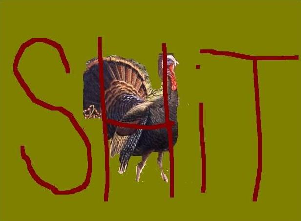

I owned a Turkey Once
His name was sugar lips. I thought that was funny because turkeys don't have
lips. They have something so much more sensual. Sugar lips would gaze at me
longingly while I cooked. Sometimes I would look back and our eyes would
meet, just for a second. I had sugar lips for three days before he got cancer. He
went bald and had a huge tumor on his side. The attraction was lost and sugar
lips died alone.